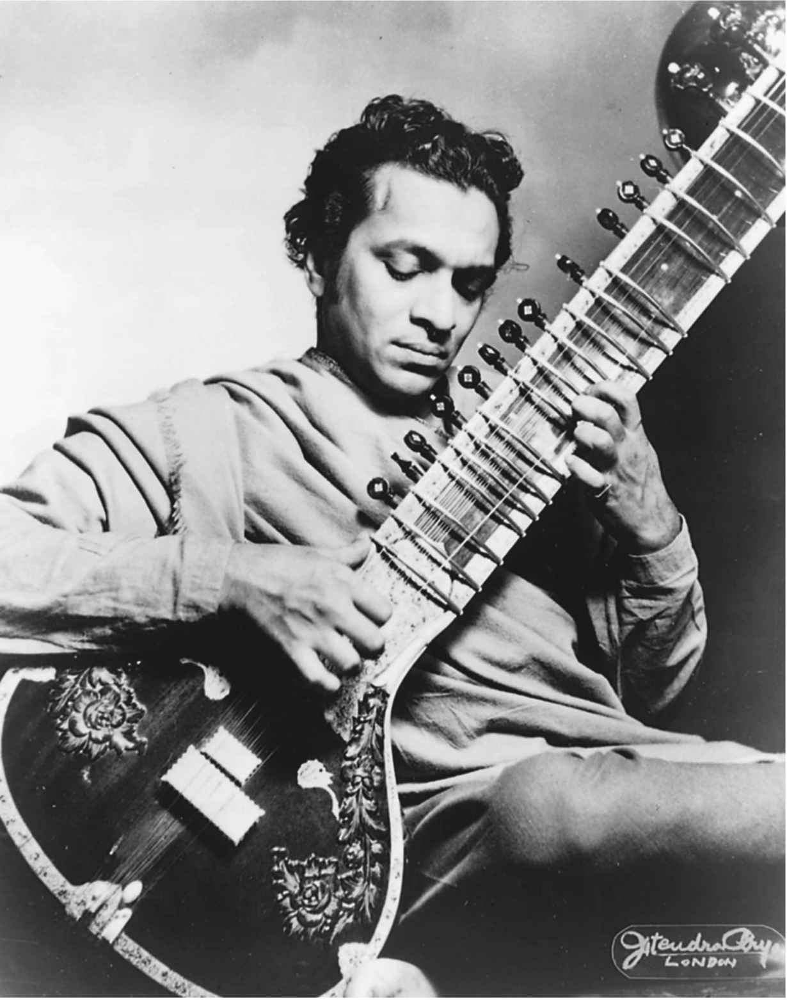
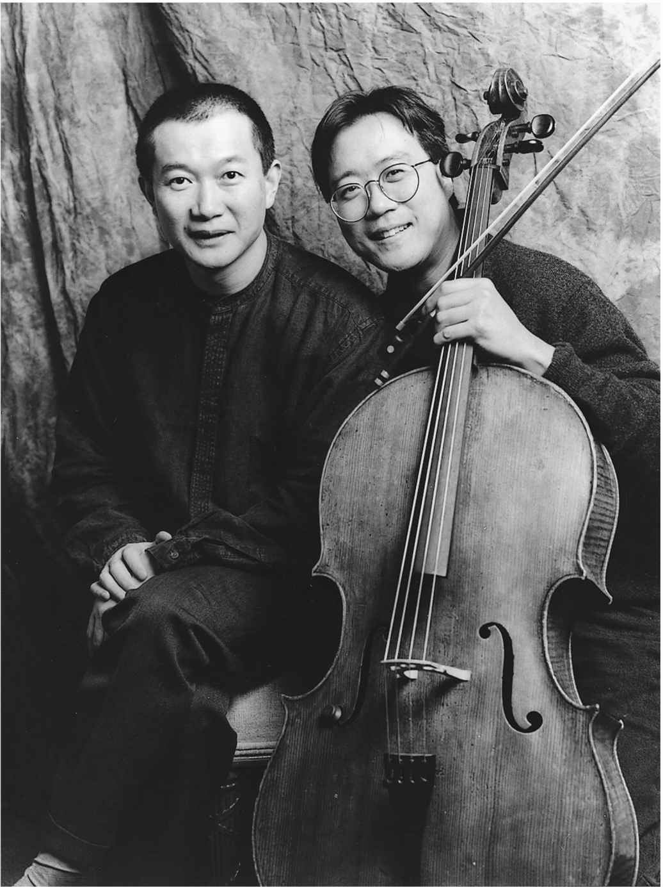

20世纪晚期，电影音乐逐渐变化。歌曲和背景音乐的多样组合出现在汇编配乐中，形成了一种强有力的电影音乐新模型。流行音乐的地位无可替代，成为一种“前沿”，可追溯至最初的无声电影配乐时代。世界音乐慢慢崛起，全球化进程影响着电影业的资金、出品和发行。当我们进入21世纪，这些变化正强有力地影响着电影音乐。
在20世纪中叶，电影受到一系列具体的挑战：导演主创论的出现和国际电影团体的发展，电影形式风格的探索及其影响，政治对艺术表现的压制，观众人数的减少，以及统计观众数量方式的改变。
新挑战，新做法
世界上两个最大的电影产业，宝莱坞和好莱坞，对此的应对方式就是不断地更新传统的做法。在宝莱坞，动作片、犯罪片之类的新电影种类同摇滚、迪斯科和说唱等的新音乐形式相适应。例如，音乐监制拉胡尔·戴夫·伯曼将迪斯科和摇滚的元素同孟加拉本土民俗传统相融合。虽然电影歌曲从未在北印度影院中销声匿迹，但它们在新类型中的流行却在逐渐减弱，它们的形式受到新的、多种多样的音乐的影响，特别是摇滚乐，而且它们的表演开始以一种更加自然的方式包含在电影中。
好莱坞同样采用了新的音乐词汇和风格，到20世纪中叶，它们已经大大取代了浪漫主义。总是会有大制作影片坚持旧有模式，例如由莫里斯·贾尔创作配乐的《阿拉伯的劳伦斯》（1962）和《日瓦戈医生》（1963）。然而，在1994年代晚期和1980年代早期，约翰·威廉姆斯凭借为《星球大战》三部曲（1977-1983）所作配乐的非凡成绩，让浪漫主义风格戏剧性地重回交响乐的舞台。浪漫主义风格和交响乐形式对大制作的动作冒险大片依然很有吸引力，例如约翰·巴里为之配乐的影片《走出非洲》（1985）和《与狼共舞》（1990），以及霍华德·肖为之配乐的《指环王》三部曲（2001-2003）。同时，新的音乐形式逐渐形成，这些是我们现在常常用到的。
在电影导演主导的电影业，以及他们所活跃的国际电影团体中，现代主义已经成为一种真实性的标记，是对操纵观众的电影惯例的质疑和否定。电影导演通常被认为是现代主义艺术家，例如米开朗基罗·安东尼奥尼、英格玛·伯格曼、路易斯·布努埃尔、阿伦·雷乃、克劳德·夏布洛尔，以及卡洛斯·绍拉都在影片中保守地使用音乐。通过避免电影音乐的各种传统功能，例如渲染情绪和气氛、引导情感，作曲家们为这些现代主义导演的影片所创作的音乐，有点儿类似于布莱希特著名的距离化效果，不会激发观众的情感。汉斯·艾斯勒在为雷乃的纪录片《夜与雾》（1955）所作的配乐中，用出乎意料72的弦乐拨奏削弱了受检阅的纳粹分子“威武”的形象。路易斯·德·帕布罗在为绍拉的影片《极乐花园》（1970）创作配乐时，用具象音乐表现一个角色的精神崩溃，具象音乐是用非音乐的声音创作音乐的一种前卫的做法。阿兰·罗布—格里耶在为雷乃的影片《去年在马里昂巴德》（1961）写剧本时，想过只用现场的噪音为影片伴奏。然而，这并没能做到。而作曲家弗朗西斯·塞里格创作了风琴赋格曲和浪漫的管弦乐曲，虽然穿着正式的呆板角色和无尽的走廊给人贫乏之感，但配上乐曲之后，便制造出丰富却令人困惑的效果。
法国新浪潮运动是20世纪后半叶非常规电影配乐的典型例子。诸如弗朗索瓦·特吕弗、夏布洛尔、雅克·里维特、雷乃，尤其是让—吕克·戈达尔等导演都为新颖且常常具有革命性的电影内容、结构和风格寻找反传统的配乐。夏布洛尔和特吕弗甚至同创作出与众不同的电影配乐的作曲家们长期合作（皮埃尔·扬森为夏布洛尔的三十多部影片创作了配乐，佐治·狄奈许为特吕弗的十一部影片创作了配乐），然而，也许新浪潮运动中电影配乐最惊人的例子要数戈达尔的几部影片：马歇尔·索拉尔为影片《筋疲力尽》（1959）创作的爵士配乐；米歇尔·勒格朗为影片《随心所欲》（1969）创作的主旋律和变奏曲，在乐句的中间就戛然而止；安托万·杜哈梅尔为影片《周末》（1967）创作的配乐，突出谷仓里的一位音乐会钢琴家的形象；加布里埃尔·亚里德为影片《各自逃生》（1980）创作的配乐，影片中几个人物飞也似的跑过正在演奏配乐的音乐家。
通过运用时髦的现代主义效果，例如序列主义作曲法和具象音乐，同时结合流行音乐元素、民俗影响、凯尔特之歌、格列高利圣咏、墨西哥流浪乐队的小号和交响乐团的全体乐手，埃尼奥·莫里康内为1960年代赛尔乔·莱昂内的意大利式美国西部片创作了一系列令人印象深刻的配乐。在影片《黄金三镖客》（1966）中，莫里康内用电吉他、陶笛（古代的一种笛子）和口琴演奏了一段传统旋律，配以非常反传统的配乐类型，包括口哨、约德尔唱法、哼叫、偶尔难以识别的人声、抽鞭声和枪声。莫里康内对好莱坞西部片强调民歌与赞美诗的旋律轮廓与和声织体的传统配乐方式不屑一顾。就这样，他为西部影片配乐创作了新模式。好莱坞西部片《决斗犹马镇》（2007）继承了莫里康内流派的特色。
德国新浪潮运动也不依惯例地使用音乐，模仿之风日盛，从巴赫到披头士乐队，任意引用。音乐以夸张、曲解、陈词滥调、断章取义博取眼球，吸引注意。卡里尔·弗林认为，这些令人不安的声画关系陷真实性于不义，让观众对与德国过去相关的历史、记忆和身份问题充满疑虑。佩尔·拉本为赖纳·维尔纳·法斯宾德创作过一系列配乐（同时帮他选取现成的歌曲），利用音乐制造惊人的效果，反映了早期现代主义的特点。在影片《玛丽娅·布劳恩的婚姻》（1979）中，拉本为一位纳粹士兵的歌曲配以木琴和钟琴，故意唤起童真的感受。在影片《中国轮盘》（1976）中，有一个必须拄拐行走的角色，拉本反而用舞蹈的形式来表现这个角色。在维尔纳·赫尔佐格的一系列影片中，音乐组合波波尔·乌（以玛雅一本神话故事命名）创作了一系列饶有趣味的乐曲，大多是电子音乐，有些使用当地乐器，模糊了种族问题——例如影片《阿基尔：上帝的愤怒》（1972）中类似佛经吟唱（由巴伐利亚国家歌剧院合唱团演唱），背景设在西班牙征服新世界时期的亚马孙雨林中；或是《诺斯费拉图》（1979）中以西塔琴伴奏的仿格里高利圣咏，这是由赫尔佐格翻拍自1922年F. W. 茂瑙的吸血鬼影片。
在1960年代的日本，武满彻为一系列在国际上获得成功的影片创作了新颖的配乐。武满彻是日本首屈一指的艺术音乐作曲家，他创造了融汇东方和西方音乐元素的形式，对国际上有艺术鉴赏力的观众来说很容易理解。然而，他创作的许多配乐具有很高的实验性，为听众期望听到（或不期望听到）的东西带来了意想不到的优势。在《怪谈》（1964）中，武满彻用具象音乐很好地表现了鬼怪；在《砂之女》（1964）中，他以电子的方式操纵录制过程，创造出梦幻般冲洗的声音。武满彻的电影音乐作品以对声音和寂静的独特安排而著称，他有时因为声音设计和配乐而赞誉加身。在黑泽明导演的影片《乱》（1985）中，逼真的激战场景是无声的，代之以荡气回肠的交响乐曲。美丽凄婉的旋律与血腥屠杀的场面形成鲜明对比，一切随着一声枪响戛然而止。此时音乐停止，怪诞的死亡之声响起。武满彻解释说：“我希望声音也有呼吸的自由。”
1950年代，印度电影导演冲出印度电影业，面向全球的新观众群体。他们中的一员，在以加尔各答为中心的孟加拉电影业工作的萨蒂亚吉特·雷伊很快得到认可，成为新晋导演之一。比起北印度电影，孟加拉电影更加依赖西方音乐，包括美国流行音乐、拉美音乐、伊比利亚音乐、西方艺术音乐，以及好莱坞电影的配乐技巧。而且，在孟加拉电影中，音乐的使用更加惯例化，音乐表演要么被统统去除，要么被安排得更加合理，置于自然的场景中，比如夜总会、聚会，或是梦境。雷伊指出：“如果让我在一部非音乐剧的影片中加入六首歌曲，我一定会举起双手放弃。”
电子音乐
起初电子音乐专属于恐怖片和科幻片。但在米克罗斯 · 罗兹萨为电影《爱德华大夫》（1945）和《失去的周末》（1945）所作的配乐中，电子音乐开始出现。罗兹萨的配乐以泰勒明电子琴的诡异声音为特色，泰勒明电子琴是一种电子乐器，通过演奏者双手的动作穿过无线电波来“演奏”。在《哥斯拉》（1956）中，伊福部昭用一部磁带录音机发出的电子乐作为配乐；同年，路易斯和贝贝· 巴伦为《禁忌星球》（1956）创作了第一支完全由电子乐组成的电影配乐。在吉奥吉· 莫罗德为《午夜快车》（1978）、范吉利斯为《火之战车》（1981）和《银翼杀手》（1982）合成的配乐中，电子音乐成为主流，非常抢眼。音响合成器可以通过采样复制出任何一种乐器的声音，采样就是获取声音的数据图像，进而操控此类声响。随着1983年音乐设备数字接口的问世，数字语言实现了标准化，电声乐器同电脑实现了同步。也就是说，电声乐器和电脑可以互相传递信息了。为了节约开支，音响合成器自1980年代问世以来，常常取代各种原声乐器和很多录音公司的乐师。
有了音响合成器，世界各地的乐器都可以被模仿。例如，加布里埃尔·亚里德为《英国病人》（1996 ）创作的配乐在使用传统交响乐团的同时，用了合成的德西马琴（中东的一种传统弦乐器）的声音。在《马利维尔》（1980）中，亚里德通过合成自然的声音、他自己的声音、德西马琴声和另一种中东传统乐器乌得琴（也是鲁特琴的祖先）的声音，创作出配乐。有了音响合成器，没有受过作曲训练的艺术家们也可以创作电影配乐，例如导演约翰·卡朋特，他的很多影片中都有他自己合成的音乐，包括《血溅13号警署》（1976）、《万圣节》（1978）和《纽约大逃亡》（1981）。
音响合成器最创新的用法就是创作出传统管弦乐队所不能演奏的声音。很多作曲家都做过这方面的尝试：大卫·夏尔在《窃听大阴谋》（1974）中用失真的合成钢琴声来表现主角的精神失常。昆西·琼斯在《大盗铁金刚》（1994）的配乐中合成了电子窃听器的声响，将其同小型爵士乐团的声音混合在一起。克里夫·马蒂涅兹在《毒品网络》（2000）中用合成器创作出一种环境声效，为影片的最后一幕（一场棒球比赛）制造出一种超脱尘俗的效果。在世界上很多电影业中，合成配乐已经成为一种规范。
雷伊的早期影片中，“阿普三部曲”由拉维·香卡创作配乐。香卡曾广泛游历过西方，但在他创作的电影配乐中，只用了印度乐器和经典民乐传统，显然，雷伊对此非常不满。雷伊很快就开始自己创作配乐了。然而，在雷伊的全部作品中，能够深深打动人的一些片段都是香卡所作配乐的部分：在《大地之歌》（1955 ）中，当父亲回来后听自己的妻子说女儿已经死去时，他们的对话声被一种印度拉弦乐器在高音区的哀鸣声取代；在《大河之歌》（1956）中，当阿普的母亲打了他一记耳光后，打击乐的声音充分表现了事后他们之间震惊的情绪。

图6 1950年代，拉维·香卡用印度的很多本土乐器，包括西塔琴，为电影导演萨蒂亚吉特·雷伊的一系列影片创作配乐
在拉丁美洲，20世纪下半叶墨西哥、巴西和阿根廷的电影业都面临着好莱坞廉价易得的进口影片的巨大挑战。电影制作人发现自己置身于两难境地：是追求商业成功（模仿好莱坞模式的压力），还是用电影表现独特的民族关注，实现自身的社会角色。很多电影制作人，特别是那些刚在国际上确立身份的电影导演，试图两者兼顾，用影片中的配乐做尝试，将好莱坞配乐、欧洲艺术音乐以及当地的音乐元素进行融合。即便是公认的政治性电影制作人也处于这一折中的音乐境地。巴西电影制作人格劳贝尔·罗恰的纪录影片，例如《变幻的风》（1962）、《黑上帝，白魔鬼》（1964）和《痛苦的大地》（1967）中既有原创的乐曲，也有从别处引用的音乐，包括欧洲艺术音乐（巴赫和威尔第）、巴西艺术音乐（海特尔·维拉—罗伯斯，他本人就深受欧洲和巴西音乐的影响，并将两者融会贯通），以及巴西人和非裔巴西人的音乐（桑巴舞曲和康得布雷仪式舞曲）。在保罗·勒杜克的影片《弗里达》（1984）中，墨西哥的科里多民歌、西班牙的萨苏埃拉说唱剧和欧洲的艺术音乐（圣—桑、西贝柳斯、普罗科菲耶夫）糅合在一起。费尔南多·梅里尔斯的影片《上帝之城》（2002）中的电影配乐由安东尼奥·平托和艾德·科尔特斯创作，他们将原创作品同美国流行的风格，例如说唱、灵魂乐、迪斯科，以及巴西的桑巴舞曲相融合，通过这种融合，考验了巴西本土音乐在世界流行音乐中的竞争力。一个特别有趣的例子是，阿根廷导演费尔南多·索拉纳斯的影片《探戈！加德尔的放逐》（1985）中的探戈配乐，由著名作曲家、新探戈的缔造者阿斯托尔·皮亚佐拉创作，该配乐融探戈、爵士乐和欧洲艺术音乐于一体。索拉纳斯自己写了歌词。影片中的探戈戏谑了流行电影传统的爱情探戈，并且回应了国家问题（1976—1983年统治的军事执政团体为了破坏大众对阿根廷文化的拥戴，曾取缔了探戈），它的使用使得这部影片处于逃避现实的音乐剧和尖刻政论之间有趣联结的境地。在西班牙，佩德罗·阿莫多瓦的早期影片有相似的音乐样貌，充分开发本土传统和流行的西班牙音乐，例如波列罗舞曲，以达到宣传本民族的目的。
在埃及电影业，电影制作人同样面临商业压力。埃及的流行音乐已经越来越国际化，因此，埃及的商业影片配乐同样如此。一些电影制作人仍在继续探索传统和当代的阿拉伯音乐。在导演优素福·沙欣的影片《浪子回乡》（1976）中可以听到黎巴嫩歌手玛格达·鲁米的演唱，在哈伊里·贝沙拉的影片《螃蟹》（1991）和达乌德·阿布德—赛义德的影片《猫》（1991）中都有阿拉伯歌曲表演。贝沙拉的《项链和手链》（1986）中有流行歌手穆罕默德·穆尼尔的演唱，他的《奶油冰淇淋》（1993）和《美国咒语》（1993）中有流行歌手阿穆尔·迪亚布和穆罕默德·福阿德的演唱。阿西娅·杰巴尔的《西瓦纳山女人们的玛卡姆》（1976）以玛卡姆——起源于中世纪阿拉伯、西班牙的一种传统音乐形式——为电影的主题和配乐。
别的地方也有其他挑战，是政治统治给艺术表达造成的压抑。到1950年代，很多著名的苏联作曲家满腔热忱地投入电影创作，然而，由于受到形式主义（形式主义断言，现代技术的使用令大众无法理解他们的音乐）的指控，他们的音乐作品却被禁。肖斯塔科维奇、哈恰图良、舍巴林和普罗科菲耶夫在他们职业生涯的某一时刻都致力于配乐的创作：他们发现，聚光灯之外的工作同样有回报。很多作曲家在电影配乐中反复使用不为苏联音乐厅所接受的音乐，这一现象似乎没有引起党政官员们的注意。
在政治压制最严苛的时期，一些影片连同它们的音乐得到特赦。肖斯塔科维奇的电影事业生涯很长，他同格里高利·柯静采夫合作，从《新巴比伦》（1929）到《李尔王》（1971），并且他（小心地）使用现代主义的各种手段。在1970年代，当艺术表现的限制开始被解除，安德烈·塔可夫斯基等苏联导演们开始面向全球的观众。到1980年代，甚至连摇滚乐都出现在苏联的影片中。
虽然在1950年代和1960年代，伊朗电影业挣扎着经受住印度和好莱坞电影业的冲击，但1979年的伊斯兰革命却令整个伊朗电影业几乎毁于一旦。然而，从长远来看，新政府在很大程度上终结了伊朗新浪潮电影。中东学者哈米德·纳菲斯认为，官方对西方的谴责以及严苛的审查制度，实际上为独一无二的伊朗影片获得重生创造了条件。（然而，值得我们注意的是，一些可以在国际艺术电影院巡回展出的伊朗影片，在伊朗国内却被禁。）1980年代，电影成为伊朗最受欢迎的娱乐项目。生机勃勃的伊朗音乐在革命的冲击下四分五裂，却在电影中找到了庇护所。很多杰出的音乐厅作曲家也转向电影配乐创作，电影配乐创作既为作曲家们提供了生计，也让他们通过电影配乐录音的流行拥有了听众。
电影配乐反映了对民族问题的重新关注。虽然伊朗的很多新浪潮影片遵从新现实主义美学，在对音乐的运用上非常保守，但有些影片却以音乐为显著特色。侯赛因·阿里扎德，一位受过传统训练的指挥家和作曲家，在为导演巴赫曼·戈巴迪的一系列影片创作配乐时运用了伊朗传统音乐元素，这些影片包括《半月交响曲》（2006）和《乌龟也会飞》（2004）。《半月交响曲》讲述的是一个音乐家的家庭，音乐家是流亡在伊朗的库尔德人，在萨达姆·侯赛因倒台后回到伊拉克库尔德斯坦，参演一场庆祝音乐会。这部影片为本土音乐提供了充分的展示机会，配乐以波斯乐器为主，有些在影片中还可以见到。在莫森·玛克玛尔巴夫的影片《魔毯》（1996）中，阿里扎德创作的配乐用波斯与西方乐器的不寻常组合表现了叙事脱俗的一面（这是一个爱情故事，是以灵魂附在波斯魔毯上的一个女性的视角来叙述的）。
1949年起，中国共产党领导下的中国电影进入国有化时代，与约瑟夫·斯大林领导下的苏联电影情形一致。和早期有声片时代充满活力的电影配乐相比，中华人民共和国建国初期的电影配乐往往显得因循守旧，仅用来渲染情绪、烘托气氛。中国内地电影的创作放缓，到1994年代几乎停滞；香港转而成为华语电影业繁荣发展的中心。1966-1976年是内地电影业发展的低潮期，无论是中国传统音乐还是西方任何形式的音乐都被禁止。
直到1980年代改革开放，中国电影业才得以复苏，并加入国际电影大军。这一时期中国涌现出一批新的电影制作人（被称为“第五代电影人”）以及新一代作曲家，新浪潮运动蔚然成风。新浪潮运动中的作曲家们不断崛起，为电影创作配乐。他们当中的很多人都有西方求学的背景。赵季平是其中最为著名的一位，他为很多电影配过音乐，将中国传统音乐元素同西方的和声与乐器法相结合，包括张艺谋的《红高粱》（1987）、《菊豆》（1990）和《大红灯笼高高挂》（1991），还有陈凯歌的《黄土地》（1984）和《霸王别姬》（1993）。在《霸王别姬》中，赵季平探索了中国戏曲中的打击乐器，进行了电子改编，取得了一些新奇的效果。但他的作品也并非总是收获赞誉。对于他为《炮打双灯》（1994）所作的配乐，默文·库克评论道，它“在极大程度上满足了我们对沃恩·威廉姆斯会如何改编亚洲民间曲目的想象”。

图7 谭盾（左）以《卧虎藏龙》电影配乐获得2000年奥斯卡金像奖（最佳原创配乐），由大提琴演奏家马友友的大提琴独奏担任主奏
然而，在国际上最成功的中国作曲家还是谭盾。“文革”期间，他从北京的音乐学校被重新分配到湖南的稻田中劳作了两年。尽管用西方的乐器和演奏手法表现中国和亚洲的音乐元素在“文革”期间曾被明令禁止，但谭盾将它们运用在职业中的音乐厅和电影之中。他为李安的《卧虎藏龙》（2000）——美国和中国台湾共同监制——所作的配乐，曾获得奥斯卡金像奖最佳原创配乐奖，其中有中国传统乐器演奏、中国戏曲、日本歌舞伎的音乐传统、一组亚洲打击乐，以及与世界著名的大提琴演奏家马友友合作的一段西方管弦乐。同赵季平一样，谭盾也曾被批评依赖中国式的西方幻想。然而，正如他所说，他正在促使中国音乐成为国际音乐语言的一部分：“我是从东方去往西方的马可·波罗。”
本土音乐，无论是戏曲还是流行音乐，一直是华语电影业发展的重要组成部分。在香港的广东话影片市场，直到1994年代，观众们都倾心于以中国戏曲为主要素材的电影；在普通话影片市场，歌舞片则尝试了本土流行音乐和舞蹈。在1980年代的台湾，电影导演侯孝贤也做了同样的尝试，摄制了一系列由流行歌手凤飞飞和钟镇涛担纲主演的歌舞片，其特色就是采用了许多流行歌曲。同时代的香港电影不断发掘流行音乐充满活力的美感，由歌星饰演角色，并配上很多当时的歌曲。就连吴宇森的警匪惊悚片《喋血双雄》（1989），其中的三首歌曲也是由影片女主角叶倩文演唱的。
汇编电影配乐
20世纪后半叶的电影音乐以流行音乐为主要特色。正如我们所看到的一样，埃及、伊朗、印度、苏联和中国等不同国家的电影中都长期融入了大量的流行音乐，要么作为主要表现手法，要么作为背景配乐，有时是两者兼有。至1960年代，大量的流行歌曲也出现在好莱坞的影片当中。从某种程度来说，好莱坞的音乐剧和各种影视作品中一直有流行歌曲，例如，电影《卡萨布兰卡》（1942）中令人难忘的《随时光流逝》，《飘》（1939）中塔拉的主旋律——依主题而创作的背景配乐令人印象深刻。但就电影中大规模运用流行音乐来说，好莱坞没能引领潮流。早在1950年代，流行歌曲就被专门创作出来，作为背景配乐，例如迪米特里·迪奥姆金和奈德·华盛顿为《正午》（1952）所作的《别抛弃我！噢，亲爱的》。但流行歌曲作为背景配乐的大量使用还是在1960年代。《蒂凡尼的早餐》（1961）在这一发展中起了不小的作用。亨利·曼西尼的《月亮河》在影片中由奥黛丽·赫本演唱，并作为背景配乐贯穿整部影片。《月亮河》获得1961年奥斯卡最佳歌曲奖和格莱美年度歌曲奖。电影原声专辑曾占据公告牌排行榜长达96周之久。
20世纪中叶，好莱坞面临的商业压力使其格外关注流行音乐，这是完全有理由的。观众群体趋向年轻化，电视吸引了大量观众；制片体制受到一系列法律诉讼的影响，制作、发行、上映垂直整合的方式正在被打破；1950年代和1960年代流行音乐迅速蓬勃发展起来。好莱坞作为制度的实践体正在分裂，运作模式趋向多样化，这就要求唱片公司交叉推广影片（而且唱片公司开始收购电影制片厂）。杰夫·史密斯颇具说服力地指出，实际上流行歌曲根据经典好莱坞配乐的原则进行改编，被用来呼应剧情的发展，引导观众的情绪反应。想想《泰坦尼克号》（1997）里的歌曲《我心依旧》，在片尾是由席琳·迪翁演唱的；但作为两位主人公的爱情主题曲，这首歌在整部影片中首次响起时是以不同的编排和器乐组合呈现的。
但是对流行歌曲的广泛使用的确令好莱坞的音乐风格更加85为当代所推崇；事实上，由于可以为电影带来利润，在配乐中使用流行歌曲很快就成为必要条件。的确，常常在片尾插入一首流行歌曲，已经成为如此流行的趋势，以至于即便是《指环王》之类虚构时期的魔幻史诗也不能幸免。
然而，在20世纪后半叶，摇滚乐成为流行音乐最主要的新形式。第一次简略地听到摇滚乐，是在《黑板丛林》（1955）中，比尔·哈利和彗星乐队在片头字幕播放时表演了《昼夜摇滚》；摇滚乐最初是面向青少年观众群体的。摇滚乐很快在电影的背景配乐中流行起来，例如艾萨克·海耶斯为之配乐的《夏福特》（1994），橘梦乐团为之配乐的《魔术师》（1977）和《乖仔也疯狂》（1983）。摇滚乐也为新一代电影作曲人提供了肥沃的土壤：创世纪乐团的彼得·盖布瑞尔，恐怖海峡乐队的马克·诺弗勒，欧因哥和波因哥乐队的丹尼·艾夫曼，以及黄色魔力乐队的坂本龙一，等等。然而，有一种甚至更为彻底的模式正严阵以待，准备以新颖变化的方式运用摇滚乐。
这一出现于20世纪后半叶的新模式，不仅适应于流行音乐，而且挑战了传统配乐中原创音乐优先的做法。如我们所知，汇编配乐是在1960年代和1994年代发展起来的，与中国、伊朗和埃及早期的混成模式、新德国电影运动的拼凑模式以及宝莱坞的歌曲使用方式较为相似。汇编配乐由一系列歌曲组成，通常是现成的，有时源自影片内部，但更多时候用作背景音乐。这些小小的音乐片段主要来自电影以外（例如，歌剧、艺术音乐，但通常还是流行音乐，尤其是摇滚乐），以其原本录制的格式，有时也辅以原创歌曲和管弦乐队的配乐。披头士乐队的两部非常成功、影响深远的影片《一夜狂欢》（1964）和《救命！》（1965）就是早期的例子。
歌曲同器乐演奏有几点区别。比起背景音乐，歌曲更加直接地吸引观众的注意力，因此可以更快更有效地确立意义；歌曲可以利用语言，尤其是歌词，使意义传输更加明晰。另外，歌曲有自己的结构，可能没有专门为影片谱写的音乐那样灵活。因为现成的歌曲更容易辨认，它们也自带独特背景，可以调动人们的记忆、体验和情感，也许同电影的戏剧性相悖。尽管如此，歌曲是由音乐语言组成的，同背景配乐一样，需要用到很多相同的音乐元素，往往实现类似的功能：推行统一、营造意境、烘托氛围、塑造性格、建立时空和联系情感。
安娜希德·卡萨比安认为，汇编配乐为观众开启了新的认同模式。在她看来，尤其是当代好莱坞影片中对歌曲的日益重视，是一种积极甚至是解放的发展。卡萨比安认为，汇编配乐为观众提供了同电影建立个性化联系的新的可能性，为非主流的声音创造了空间，特别是妇女和少数派的声音。想想影片《末路狂花》（1991）中女歌手的录音方式是如何让我们洞察主角的内心世界的：玛莎·里夫斯唱的《狂野之夜》，或者塔米·温妮特唱的《我不想玩过家家》。
汇编配乐已经显著改变了电影配乐的格局。作曲人的责任被转移到导演或音乐监制，或者他们两者的身上。通常，在拍摄电影之前就需要选好音乐；导演需要知道用哪些歌曲，而清理歌曲的版权是一个很耗时间的过程。
汇编配乐的工作通常是折中的。想想王家卫的《重庆森林》（1994），其中包括王菲翻唱自小红莓乐队的《梦》和极地双子星乐队的《蓝胡子》，黛娜·华盛顿的《多么不同寻常的一天》，丹尼斯·布朗的《生活中的事》，爸爸妈妈乐队的《加州之梦》，以及一首原创歌曲，迈克尔·葛拉索的《巴拉克》。阿方索·卡隆的影片《你妈妈也一样》（2001）中变化多端的汇编配乐主要由现场音乐组成，同时也有几十首用英语、西班牙语录制的歌曲：美国摇滚歌手弗兰克·扎帕和英国摇滚歌手布莱恩·伊诺，澳大利亚歌手娜塔莉·安博莉亚，西班牙说唱歌手马拉·罗德里格兹，1994年代墨西哥的迷幻摇滚乐队“埃米利亚诺·萨帕塔革命”，墨西哥流行歌手伊迪丝·马尔克斯，墨西哥另类摇滚乐队“塔库瓦咖啡馆”，以及索诺兰的传奇吉他手兼作曲人伊格纳西奥·佩努努利·杰米。
世界音乐
在电影配乐中，世界音乐占有越来越重要的地位，无论是引用世界音乐的汇编配乐，还是借鉴其乐器法的原创配乐。自1980年代左右开始，“世界音乐”这一术语就成为一个广泛使用却定义松散的概念；一般来说，它是指西方以外、面向全球听众的本土流行音乐。世界音乐出现在很多汇编配乐中：起源于印度北部、苏菲派穆斯林用于祷告的音乐卡瓦里，在影片《基督最后的诱惑》（1988）和《死囚漫步》（1995）中由著名的巴基斯坦歌手努斯拉特·法帖·阿里·汗演唱；北非的拉埃乐本身就是一个十足的大熔炉，受到来自世界各地的影响，在影片《第五元素》（1997）中，拉埃乐歌手卡勒德演唱了配乐。世界音乐同样出现在原创配乐中，例如影片《冰风暴》（1997）中，麦克·唐纳运用了美国本土长笛和苏丹的加麦兰乐器。世界音乐在影片中是起积极作用（向观众介绍之前不熟悉的音乐），还是消极作用（对世界音乐的过度开发和商品化，正如将西方音乐商品化一样，这只不过是用西方文化以外的音乐追逐商业利益的又一例证），这个问题尚未有定论。也许两者兼有。
在某种程度上，电影一直是一个国际性的事业。当很多电影受到资金和观众的限制（虽然事实已经越来越非如此），被局限于摄制它们的国家内，也会受到国际化长期的影响。电影音乐的发展历程也是一个国际化的过程。在国际化这个概念受到关注之前很久，作曲家们就开始从一个国家和文化向另一个涌入，他们所带去的音乐模式也在新地区随之传播开来。电影音乐一直都是超越国界的：移民到好莱坞的欧洲作曲家们带来了浪漫主义；中国早期的有声电影配乐引用了施特劳斯圆舞曲和左翼革命歌曲；埃及的电影借鉴了拉丁美洲和非洲的音乐元素；波斯语影片向好莱坞电影配乐和波斯传统乐器演奏的波斯音乐借鉴；北印度的电影制作对今天的好莱坞电影配乐有很大影响。事实上，按照惯例，世界音乐会影响好莱坞以及一些让人意想不到的地方：在汉斯·季默和丽莎·杰拉德为影片《角斗士》（2000）所作的配乐中，可以听到杏木双簧管（亚美尼亚的一种管乐器）的演奏。
汇编配乐也毫无疑问地受到国际化的影响：影片《你妈妈也一样》中美国和英国的经典摇滚乐与当代经典的墨西哥音乐并存；在《杀死比尔1》和《杀死比尔2》（2003-2004）中，既有当代香港的朋克摇滚乐，也有经典好莱坞电影配乐；《重庆森林》，一部由出生在中国内地的导演于香港制作的华语影片，其中有美国流行音乐、雷鬼音乐，以及摇滚歌曲的广东话翻唱版本。电影作曲家们的身份认同也是超越国界的。想想看，加布里埃尔·亚里德出生并成长在黎巴嫩，先是移民到法国，后来移民到巴西，又回到法国，然后去往伦敦，也是在那里，他为多部好莱坞影片创作配乐。现在电影配乐的创作也常常是国际性的。为了打造《卧虎藏龙》，在谭盾和李安的监制下，大提琴演奏家马友友在纽约录制了他的独奏，之后又与在上海录制的管弦乐配乐进行整合，这是一支由谭盾指挥、有中国传统乐器和一组亚洲打击乐器配合演出的西方交响乐团。
21世纪世界级的电影音乐作曲家是西班牙作曲家阿尔贝托·伊格雷西亚斯。他在20世纪创作的配乐，尤其是为佩德罗·阿尔莫多瓦的电影所作的配乐，涉及的音乐传统相当广泛，有探戈舞曲、民乐、爵士乐，以及经典好莱坞电影配乐。2007年，伊格雷西亚斯为《追风筝的人》创作了用萨伦吉琴演奏的配乐，运用了中东的各种乐器，例如：班苏里笛和奈伊笛，两种木制的长笛；桑图尔琴，一种扬琴；拉巴卜琴，一种阿富汗琵琶；以及塔布拉鼓。“为创作电影音乐，”他说，“创作者需要有全球视野，但也可以改变、颠倒和调整。”